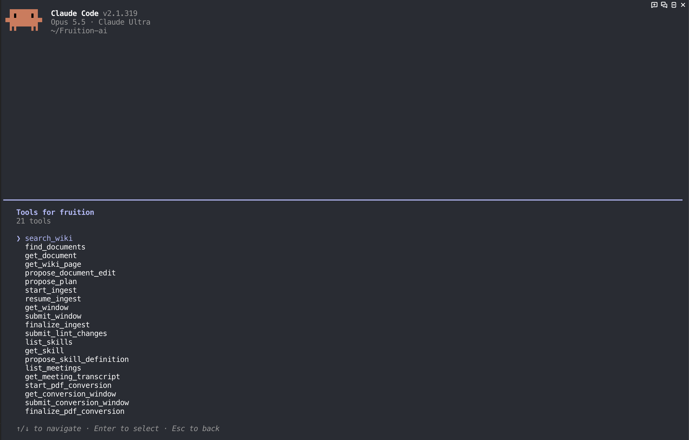

01 Background
Using Fruition knowledge from an external AI tool required connecting both retrieval and document changes. Giving AI direct write and approval authority could save changes users had never reviewed. Revoked connections and stale document versions also needed explicit handling.
Users can work with their existing AI tools and models while reusing Fruition documents and Wiki pages, reviewing and approving actual changes in the web app.
02 Separating responsibilities and verifying real clients
Separating external model work from service authority
Problem A separate integration path could drift from existing authorization, storage and approval rules.
Decision Let the user’s model understand documents and draft changes while Fruition retains authority over access and execution.
Implementation Bound OAuth connections to a user, workspace, client and scope, checking current permissions on each request. Connected document and Wiki retrieval, ingestion and edit proposals, plus PDF, Skill and meeting tools.
Verification Confirmed discovery of 21 tools in a real Claude Code connection. Tool discovery was kept separate from successful execution of every tool.
Separating proposals from web approval and storage
Problem AI approving its own changes, or a document changing after review, could save something the user never approved.
Decision Expose no MCP approval tool. Require a person to review the preview and quote in the web app.
Implementation Fixed the approved version, hash, scope and price, and rechecked permissions and conflicts immediately before writes. Used receipts stored with changes for billing and returned the same result for duplicate submissions.
Verification With synthetic documents, verified ingestion → web approval → Wiki search and page retrieval → edit proposal → web approval and storage → source reread in both Codex and Claude Code. Claude changed only Monday to Wednesday, preserving the owner and line breaks.
Verifying connection revocation and version boundaries
Problem Retained tokens and confusion between metadata versions and body revisions could break access revocation or reject valid edits.
Decision Authorize against current connection state and detect body conflicts using the body revision.
Implementation Fixed missing gateway routes, edit-range calculation and body/metadata version confusion found during real-client checks. Disconnecting one user connection blocks new access without disabling other active connections.
Verification Confirmed natural OAuth token refresh in both clients. After disconnecting Codex, its next real access was blocked with HTTP 403 while Claude’s connection stayed active. An edit proposal using an older body revision was rejected with SOURCE_CHANGED.
03 Improved processing flow

flowchart TD
C[Codex or Claude Code] --> O[OAuth connection and current permissions]
O --> R[Search and read documents and Wiki]
R --> P[External AI submits a proposal]
P --> V[Validate scope and source version]
V --> W[Review changes and quote in web app]
W --> A{User approval}
A -->|Approve| X[Recheck permissions and conflicts]
A -->|Reject| N[Keep existing data]
X --> S[Save through existing services with receipt]
S --> Q[Reread changed source through MCP]MCP submits proposals; the user approves in Fruition’s web app. Existing services apply the change, and a subsequent read confirms the stored result.
View Mermaid source
flowchart TD
C[Codex or Claude Code] --> O[OAuth connection and current permissions]
O --> R[Search and read documents and Wiki]
R --> P[External AI submits a proposal]
P --> V[Validate scope and source version]
V --> W[Review changes and quote in web app]
W --> A{User approval}
A -->|Approve| X[Recheck permissions and conflicts]
A -->|Reject| N[Keep existing data]
X --> S[Save through existing services with receipt]
S --> Q[Reread changed source through MCP]04 Results and lessons
Verified ingestion, retrieval, approval, editing and rereading in Codex and Claude Code
Verified the core flow in two real clients using synthetic test accounts and documents. Codex changed body revision 1 → 2 and Claude Code 3 → 4; each reread the final source and hash through MCP. Also verified that disconnecting one connection blocks its access while another remains active. Additional feature checks passed 33 PostgreSQL integration tests and 6 unit/contract tests.
These are dev-merged changes and isolated-environment results recorded on November 9, 2026, not a production release or execution proof for all 21 tools. Full native execution of the expanded PDF, Skill and meeting flows remains unverified. Automatic Wiki updates after source edits were not verified. Test quotes are not production prices.